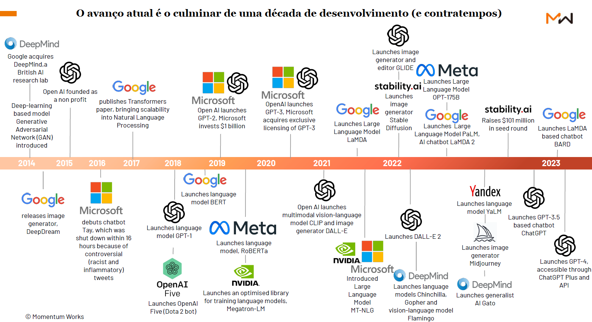

Introdução à Ciência de Dados
Conceitos de Inteligência Artificial e Machine Learning
UFPE
Estrutura
- Inteligência Artificial;
- Machine Learning;
- Deep Learning;
- Ciência de Dados na IA;
Introdução à Inteligência Artificial
Pense na pessoa mais inteligente que você conhece. O que nessa pessoa leva você a descrevê-la dessa maneira?
- Ela é uma pensadora rápida, capaz de internalizar e aplicar novos conhecimentos imediatamente?
- Ele é altamente criativo, capaz de gerar continuamente ideias novas que você nunca pensaria?
- Talvez ela seja altamente perceptiva e se concentre nos menores detalhes do mundo ao seu redor.
- Ou talvez ela seja profundamente empático e entenda como você está se sentindo antes mesmo de você.
Introdução à Inteligência Artificial
A inteligência humana abrange um amplo espectro de modalidades, exibindo habilidades como:
- cognição lógica;
- espacial;
- emocional;
Seja como gênios da matemática ou vendedores carismáticos, devemos utilizar habilidades cognitivas como memória de trabalho, atenção sustentada, formação de categorias e reconhecimento de padrões para entender e ter sucesso no mundo todos os dias.
Introdução à Inteligência Artificial

Timeline 1 da IA.(fonte:Weijermars, et.al. )
Introdução à Inteligência Artificial

Timeline 2 da IA.(fonte: Momentum Works report – The future by ChatGPT)
Introdução à Inteligência Artificial
Quais as hype do momento?
- OpenAI:
- DALL-E - modelo de geração de imagens;
- ChatGPT - modelo de linguagem natuural;
- SORA - modelo de texto-para-vídeo;
- Whisper - modelo de audio-para-texto;
- Meta:
- T5 - modelo de tradução de linguagem natural;
- Google:
- BERT - modelo de linguagem natural;
- GEMINI - modelo multimodal;
- LaMDA - modelo de linguagem natural;
- Anthropic:
- CLAUDE 3 - modelo de linguagem natural;
Introdução à Inteligência Artificial
Introdução à Inteligência Artificial
MOISES AI é uma ferramenta tecnológica desenvolvida com o intuito de isolar e extrair instrumentos e vocais de gravações musicais.
Introdução à Inteligência Artificial
GEMINI é um modelo de IA desenvolvido pelo Google que pode entender e gerar texto, imagens e áudio. O modelo é capaz de responder a perguntas, criar histórias e até mesmo compor músicas.
Introdução à Inteligência Artificial
SORA é um modelo de IA desenvolvido pela OpenAI que pode transformar texto em vídeo. O modelo é capaz de criar vídeos de alta qualidade a partir de descrições de texto.
Introdução à Inteligência Artificial
Wonder Studio é um estúdio de animação japonês que utiliza IA para criar personagens e histórias. O estúdio foi fundado por Yoichi Ochiai, um artista e pesquisador de IA.
Introdução à Inteligência Artificial
Embora os computadores superem os humanos em tarefas computacionais em larga escala, sua especialização é estreita, e a capacidade das máquinas fica atrás da inteligência humana em outras áreas.
Inteligência artificial, também conhecida como IA, tem sido usada de forma equivocada para descrever quase qualquer tipo de análise computadorizada ou automação.
Introdução à Inteligência Artificial
Para evitar confusão, especialistas técnicos na área de IA preferem usar o termo:
Inteligência Artificial Geral (AIG - Artificial General Intelligence) para se referir a máquinas com inteligência no nível humano ou superior, capazes de abstrair conceitos a partir de experiências limitadas e transferir conhecimento entre domínios.
Introdução à Inteligência Artificial
Dessa forma a Inteligência Artificial é dividida em duas partes:
é quando uma máquina realmente entende o que está acontecendo. Podem existir emoções e criatividade. Na maior parte, é o que vemo em filmes de ficção científica.
é quando uma máquina realiza a correspondência entre padrões, e está relacionada a tarefas específicas, e as capacidades não são facilmente transferíveis para outros sistemas.
Introdução à Inteligência Artificial
A realidade é que a inteligência artificial se encontra nas fases iniciais da IA fraca. alcançar o ponto de IA forte pode facilmente levar décadas. E alguns pesquisadores acham que isso pode nem chegar a acontecer.

Figure 1: Níveis de Inteligência Artificial proposto pelo Google.(fonte da imagem: Equus Capital)
O Google tentou classificar a inteligência Artifiical Geral em 6 níveis de desempenho, conforme a Figure 1.
Introdução à Inteligência Artificial
Se em mais de oito décadas depois da criação do primeiro modelo de IA, nós “só” atingimos o nível 1 na escala proposta pela Google, o que fizemos durante todo esse tempo?
A questão é que os modelos mais poderosos desenvolvidos nas últimas décadas não são capazes de, “aprender”, mas são extremamente eficazes em encontrar padrões.
Introdução à Inteligência Artificial
Introdução à Inteligência Artificial
Introdução à Machine Learning
Machine Leaning (ML) ou Aprendizado de máquina (AM), é um subcampo da Inteligência Artificial, que estuda os algoritmos de aprendizado. Através do processo de utilização de dados de qualidade, bem tratados, são construídos modelos de algoritmos estatísticos/computacionais.
Os algoritmos são determinados pelo tipo de dados que se tem disponível e pelo tipo de tarefa a ser automatizada.
Esses modelos criados são automatizados e melhoram o processo de aprendizagem com base em suas experiências, sem a necessidade de serem reprogramados, ou seja, sem qualquer assistência humana.
Introdução à Machine Learning
O machine learning tem o objetivo de aprender padrões com base em dados. Originalmente, as aplicações de AM eram de cunho estritamente computacional. Contudo, desde o final dos anos 90, as aplicações de AM começaram a ter muitas intersecções com as de estatística.
Atualmente, a comunidade de AM é bastante interdisciplinar, sendo a estatística uma das áreas. Enquanto que até os anos 90, métodos criados pela estatística começavam a ser incorporados em AM, atualmente a direção oposta está cada vez mais comum: métodos desenvolvidos por AM começaram a ser usados em estatística.
Dessa forma, hoje os algoritmos existentes em Machine Learning e Inteligência Artificial possuem como base em sua maioria conceitos da Estatística e Computação.
Por que IA e ML são desejados nas empresas?
Dentre os diversos motivos e vantagens de aplicar a inteligência artificial, estão a maior eficiência, a possibilidade de automatizar processos e, consequentemente, o aumento na velocidade de conclusão de tarefas.
As aplicações que utilizam a inteligência artificial são capazes de reduzir erros e aumentar a produtividade. Por isso, as empresas que adotam a tecnologia conseguem eliminar facilmente diversos custos operacionais.
Por que IA e ML são desejados nas empresas?
No inicio de 2020 uma pesquisa on-line da McKinsey realizada com 2.360 executivos em todo o mundo já mostrava o impacto da utilização da inteligência artificial nos negócios. De acordo com o estudo, 63% dos executivos cujas empresas adotaram a IA relataram que o recurso aumentou a receita nas áreas de negócios onde é aplicada, e 44% dizem que reduziu os custos da companhia. Os aumentos de receita são relatados com mais frequência em marketing e vendas, e a diminuição dos custos na manufatura1.
Por que IA e ML são desejados nas empresas?
- No entanto, inteligência artificial ainda é uma tecnologia robusta que exige que a empresa supere determinados desafios para conquistar resultados positivos com essa tecnologia.
A seguir serão detalhados 5 de alguns desses desafios:
Os maiores obstáculos para o lançamento de um projeto de IA são os dados. Mas especificamente, a falta de dados úteis e relevantes, livres de vieses embutidos e que não violam os direitos de privacidade.
Por que IA e ML são desejados nas empresas?
Todo investimento deve ser muito bem pensado antes de iniciar o processo de implementação e, obviamente, não é diferente com IA. É preciso elencar o que essa tecnologia pode fazer pelo seu negócio, visualizar com clareza como inteligência artificial será utilizada e atuará. Para aqueles que constroem sistemas de IA do zero, os custos de mão de obra e tecnologia podem ser altos. Este é especialmente o caso para aqueles que estão começando.
Por que IA e ML são desejados nas empresas?
As implementações de IA trazem consigo diversos desafios técnicos e a maioria das organizações não possui habilidades de IA suficientes para lidar com eles de forma eficiente. Se a empresa não conta com as habilidades técnicas necessárias para incorporar IA ao seu negócio e o investimento precisa ser grande demais, uma solução é considerar contar com uma empresa parceira, para que você tenha maior controle e autonomia nesse processo.
Por que IA e ML são desejados nas empresas?
Integrar a IA nas funções de uma empresa é outro obstáculo. Em um processo de transformação digital, a cultura organizacional é um dos principais desafios. Além disso, contar com a estrutura adequada de hardware e software também exige muito investimento e precisa ser feito de maneira muito bem planejada.
Por que IA e ML são desejados nas empresas?
A privacidade é um dos temas que empresas que utilizam novas tecnologias terão que lidar. Com as legislações de proteção de dados pessoais dos usuários já em vigor e sendo discutidos pelos governos de diversos países pelo mundo, as empresas precisam ter maturidade para cumprir as exigências legais, com o trabalho, e tratar as informações armazenadas de maneira ética.
… para finalizar - reflexão
Cada vez mais estamos vivendo na era dos algoritmos, em que as decisões que afetam nossas vidas estão sendo tomadas por modelos matemáticos. Dessa forma, é importante que o cientista tenha em mente que esses modelos em teoria deve nos conduzir a para um mundo mais justo, no qual todos devem ser julgados de acordo com as mesmas regras e o preconceito eliminado.
Essa questão é abordado no Livro “Algoritmos de destruição em massa”, no qual a autora traz diversos modelos que criam uma espiral discriminatória, como por exemplo, um estudante pobre não consegue obter um empréstimo porque o modelo matemático o considera muito arriscado (diante do endereço que ele mora), ele também é recusado na universidade que poderia tirá-lo da pobreza.
Referências para serem utilizadas
The Elements of Statistical Learning: Data Mining, Inference and Prediction, Hastie, T., Tibshirani, R. and Friedman, J., 2nd ed., Springer-Verlag, 2009.
An Introduction to Statistical Learning: With Applications in R, James, G., Witten, D., Hastie, T. and Tibshirani, R., Springer-Verlag, 2013.
Aprendizado de máquina: uma abordagem estatística, Izbicki, R. and Santos, T. M., 2020.
Extras:
Morris, Meredith Ringel, et al. “Levels of AGI: Operationalizing Progress on the Path to AGI.” arXiv preprint arXiv:2311.02462 (2023).
Imagens:
- Esta apresentação possui imagens obtidas da internet. Caso a fonte não seja informada, contactar o autor para que a mesma seja adicionada.
OBRIGADO!
Slide produzido com quarto
Introdução à Ciência de Dados - Prof. Jodavid Ferreira